Bayesian Bookshelf
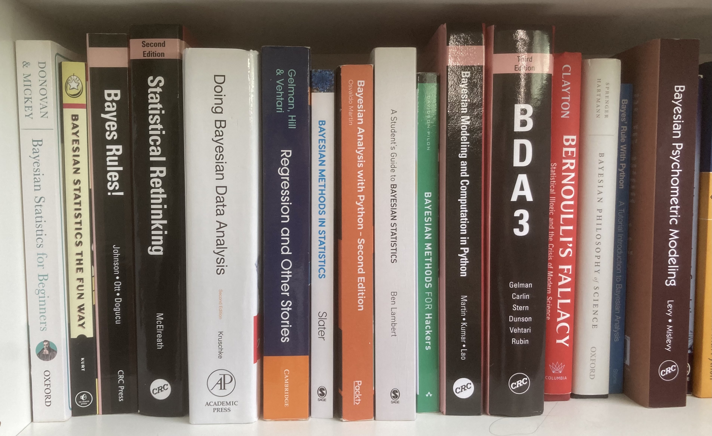
The pandemic lockdowns were a time for exploring new interests for a lot of people — baking sourdough, gardening, photography… Perhaps foolishly, I decided to get into Bayesian statistics.
I’d read a lot in the psychological methods literature for some time that the Bayesian approach was a natural and easily interpretable approach to inference, could give evidence for null effects, and there was no need to open a textbook to get the definition of a confidence interval every single time. I found plenty of published tutorial papers starting with these promises, but by the second paragraph almost all of them contained either deeply philosophical views on probability or introduced terrifying formulas and distributions I’d never heard of.
Even worse, there seemed to be two distinct schools of thought on Bayesian inference — an estimation and uncertainty approach, and the Bayes Factor hypothesis testing school. The former didn’t like the latter, and the latter seemed disconnected to the former and felt suspiciously like frequentist p-values, with journals requiring minimum thresholds for publication and discussions around the probability a Bayes Factor would be “significant”.
After two years of reading as many books as I could afford on the topic, I genuinely do think Bayesian inference has all of the benefits you read about. It is a natural way to reason about data, build models, and think about statistics. But after years of using frequentist approaches, it is not easy. Ironically, I learned much more about frequentist statistics by reading about Bayesian inference than I did in nearly a whole decade of using frequentist statistics.
If you’re interested in learning more about Bayesian inference, I’ve found these books very useful. They are a blend of theoretical and practical — I’m most comfortable in Python, but many of the ideas, if not the implementation, translate to other languages easily. Your experience may vary, but if you have a background in social or psychological sciences, my prior is that these books will help you like they helped me.
1. Bayesian Statistics The Fun Way
Will Kurt
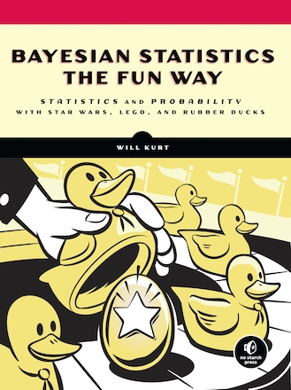
This book is the perfect place to start. It gently introduces the idea of probability, probability distributions, and explains Bayes’ rule with a lot of clear examples. There’s chapters on priors and how to update them, and discussion of using Bayes Factors to understand individual degrees of belief. There’s some R code too to help calculate some of the trickier aspects that are necessary for inference, and everything is presented in a clear and engaging way.
More on this book here.
2. Bayesian Statistics for Beginners: A step-by-step approach
Therese Donovan and Ruth Mickey
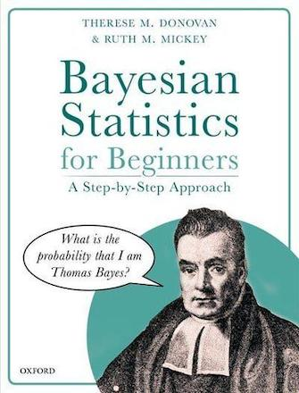
This book is amazing. It was after reading this that things finally started to make sense. The authors — who describe themselves as lifetime frequentists — go through a series of chapters that introduce probability distributions, the concepts of priors and likelihoods, and how to use Bayes’ rule to calculate posterior distributions with simple datasets. The thing I love the most about this book is that it is not afraid to repeat itself. In fact, the second half of the book revisits all the concepts of the first half, but repeats the examples with flavours of how modern Bayesian inference is done (using Markov-chain Monte Carlo methods), and introduces some basic models estimated with Bayesian methods. It’s very clear, accessible, and I got the sense the authors knew what I was thinking before I did when it came to trickier parts.
Outline of the book here.
3. Bayes Rules! An introduction to applied Bayesian Modelling
Alicia Johnson, Miles Ott, and Mine Dogucu
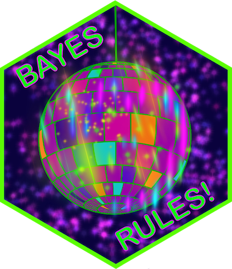
There’s a lot to cover learning Bayesian stats before you can even think about doing something as simple as a correlation. This book gives very clear examples of fitting regression models (all done in R) using Bayesian methods, and introduces concepts like prior predictive checks (what does my model think before it sees the data?) and how mixed models are thought of from a Bayesian perspective. There’s a lot of excellent content here — all types of linear models are covered, from simple linear regression through to generalised mixed models. This is an ideal hands-on book, especially if you’re comfortable with R. It’s an extremely accessible read.
You can find this book online here.
4. Statistical Rethinking, Second Edition
Richard McElreath
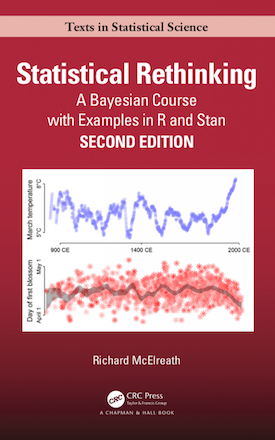
I would guess this is one of the most influential modern books on Bayesian statistics, and for good reason. McElreath works from the first principles of probability through to causal inference with directed acyclic graphs. As the name suggests, the information is presented alongside deep perspectives on inference and what it means to learn from data, and how we can often fool ourselves. This is a challenging but rewarding read — things made a lot more sense to me after some gentler texts, but it’s never far away when I am fitting models. It also comes with its own R package to facilitate model building, and is as hands-on as it is theoretical.
More info on Rethinking here.
5. Doing Bayesian Data Analysis
John Kruschke
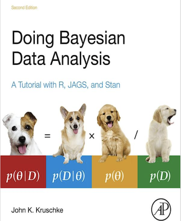
From an applied statistics perspective, this is about as comprehensive a guide to Bayesian statistics as you would hope to find. Kruschke has an accessible style and teaches Bayesian inference in comparison to frequentist approaches. Once I was comfortable with the idea of priors and model building this book helped to connect the dots between what frequentist models were doing and their Bayesian equivalents, and what the differences meant. There is also some insightful (and incisive) discussion between the two approaches to statistical inference here, and the level of detail is excellent. Kruschke has really brought the estimation approach to the fore in psychology, and demonstrates how techniques like regions of practical equivalence can give evidence for the null. This book also helped connect Bayes Factors and Bayesian estimation, with some convincing criticisms of the former approach.
John Kruschke also has an associated blog here.
6. Bayesian Methods in Statistics: From Concepts to Practice
Mel Slater
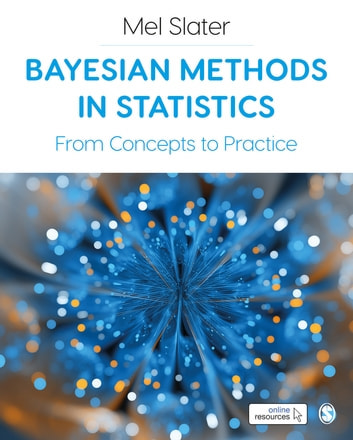
One of the things I like about this book is that it has some excellent chapters on probability distributions which have been indispensable in figuring out different types of priors in analyses. It also has a wealth of examples in how to fit many models in Stan, a probabilistic programming language (read: code that does Bayesian inference) that interfaces with R and Python. It’s also got some nice examples of how to compute Bayes Factors from fitted models, which a lot of books tend to avoid. This book has a lot of formulas, which if you’re unaccustomed to reading can prove difficult. Disclaimer: I was a reviewer of this book!
Outline here.
7. Bayesian Analysis with Python, Second Edition
Osvaldo Martin
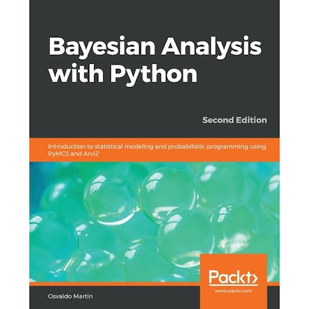
This book changed my statistical analysis practices enormously. Written by one of the developers of the amazing PyMC library, Python’s probabilistic programming package. It contains a range of examples of how to use the package, and translates a number of statistical models (linear models, generalized linear models, and hierarchical models) into Python and PyMC code. These examples are excellent. If like me you can read code faster than formulas, some big gains in understanding are to be found here. The book also introduces some of the other approaches in Bayesian statistics beyond the traditional linear model approaches, including Gaussian processes — which give you probability distributions over functions, rather than model parameters! Incredible stuff.
Codebase and discussion here.
8. Bayesian Modeling and Computation in Python
Osvaldo Martin, Ravin Kumar, and Junpeng Lao
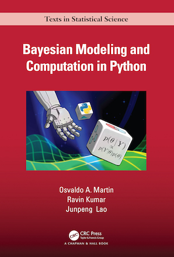
An advancement on Bayesian Analysis with Python, this features updated approaches to Bayesian inference in Python, using both PyMC and other probabilistic programming languages. There’s some really advanced topics in this book that showcase what Python can do in this realm, and there’s perhaps one of the clearest demonstrations of hierarchical models from a Bayesian perspective written in code, as well as great examples of model-checking practices like Bayesian p-values. Not a beginner text, but one to expand the skill-set in Python.
You can find this book online here.
9. A Student’s Guide to Bayesian Statistics
Ben Lambert
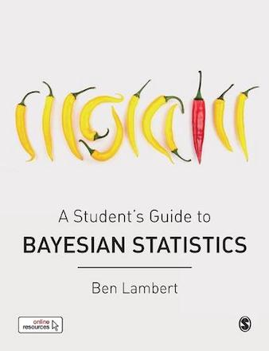
I have some mixed feelings on this book, and depending on your journey you may find it more or less useful. I encountered it pretty early on, and found it difficult. The exercises at the end of each chapter are hard and that can be off-putting, and the focus is on the theoretical approaches (with some minor applications with R), rather than actual analysis. Looking back though, the book does a really thorough job of going through each part of the famous formula — there’s a chapter on priors, \(p(\theta)\), one on likelihoods, \(p(D \mid \theta)\), and on the marginal likelihood, \(p(D)\), and how these come together. One of the standout sections is on the algorithms used in modern Bayesian computing and how they work. I’d say these are the most detailed and accessible descriptions of these “inference engines” I’ve seen.
10. Bayesian Data Analysis, 3rd Edition
Andrew Gelman, John Carlin, Hal Stern, David Dunson, Aki Vehtari, and Donald Rubin
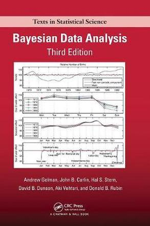
There’s a reason this book is known as the “Bayesian bible”. It’s written by some of the leaders in the field of Bayesian statistics, as well as some of the core developers of the Stan language. The book is theoretical in scope, and lays out the mathematics behind Bayesian statistics comprehensively. I’ve definitely not read this cover to cover, but it’s a good litmus test of building knowledge — any time I pick it up and read through, I know I am progressing if I am following along. Not a beginner’s book but an essential addition.
You can find this book here.
Other notable mentions
Regression and Other Stories — Andrew Gelman, Jennifer Hill, and Aki Vehtari. This is the Trojan horse of Bayesian statistics. Presented as a thorough guide to how linear models are crafted and interpreted, with some solid advance on abandoning statistical significance and a gentle demonstration of how prior information is necessary.
Bayesian Methods for Hackers — Cameron Davidson-Pilon. This book (found online and continually updated) showcases many uses of Bayesian inference, using PyMC. Interestingly, this book is pretty much devoid of formulas and takes a strong code-only approach. The examples here are pretty sophisticated, but the code focus shows how to do some creative statistics with Bayes.
Bernoulli’s Fallacy — Aubrey Clayton. No statistics here, but an inspiring historical and contemporary discussion of the Bayesian view of probability. By the time I read the book I didn’t need convincing, but if you’re curious about the philosophy of Bayesian inference, start here. And then read it again if you’re not convinced.